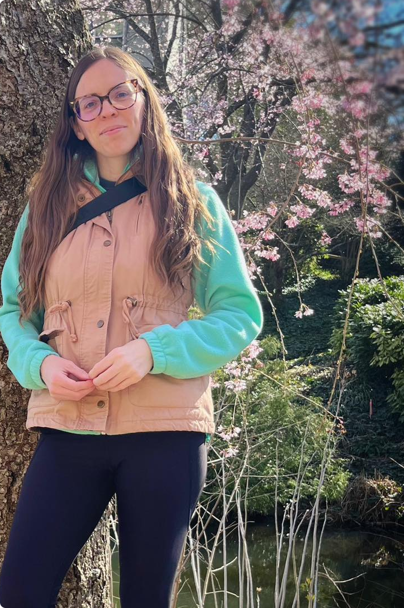
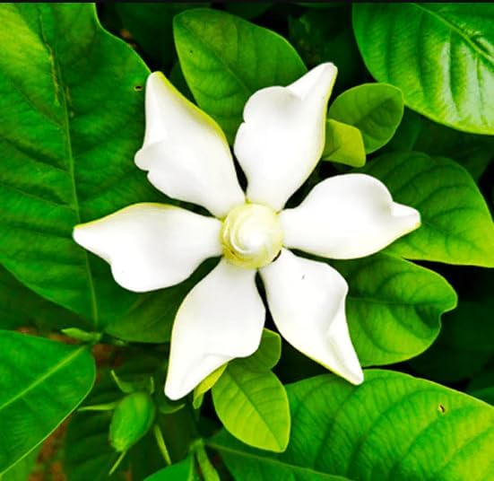
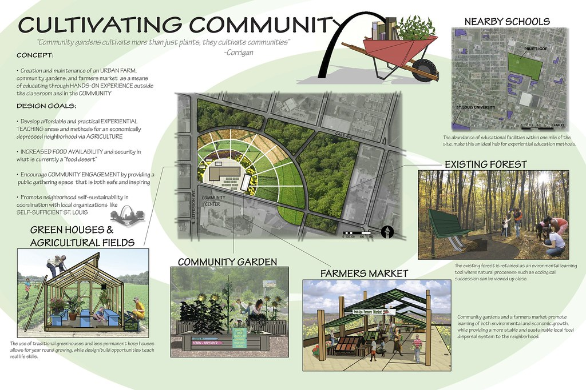

Flint, MI · Education
Beecher High School
Native landscape and outdoor learning environment for Beecher High School.
View projectLandscape Architecture · Native Planting Design · Northern Virginia

Designing spaces that belong to the land — rooted in Piedmont ecology, shaped by careful hands.
Discover the work

Landscape Architect
Northern Virginia
About
Erin Amanda Schulz is a landscape architect whose practice is rooted in the living intelligence of the Piedmont and Blue Ridge ecosystems of Northern Virginia. Every design begins with listening — to the soil, the light, the native species that once thrived there — and ends with a landscape that feels as if it always belonged.
Drawing from deep knowledge of the Mid-Atlantic's rich native flora — from Blue Ridge woodlands to Piedmont meadows — Erin works with homeowners, municipalities, and developers across Loudoun, Fairfax, Arlington, and Alexandria to create outdoor environments that are beautiful, resilient, and ecologically connected.
Her philosophy is simple: the best landscapes don't fight nature — they join it.
Experience
Education
Projects
Discovering PLACE and Beecher desired assistance in researching and planning an outdoor classroom on the school grounds, organizing and implementing a series of participatory student and teacher design charrettes, and researching and developing a place-based curriculum for middle and high school students. The overarching goal of the project was to strengthen the presence of place-based education at Beecher, and to document the process of implementing the project so that the experience can be used as a framework for other schools interested in incorporating place-based education into their own educational practices.
Design Philosophy
"I believe every garden should feel inevitable — as if the land chose these plants itself, and we were simply paying attention."— Erin Amanda Schulz
What We Offer
Curated planting plans featuring regionally native species chosen for beauty, resilience, and ecological function. From prairie meadows to woodland gardens, every selection supports local pollinators and wildlife.
Transforming private gardens into living ecosystems. Full-service design from concept through installation — patios, paths, rain gardens, and naturalized borders that feel effortless year-round.
Returning degraded or conventional landscapes to vibrant native habitat. Invasive removal, soil remediation, phased planting programs, and long-term maintenance guidance for thriving natural systems.
Comprehensive site assessment including soil testing, drainage mapping, sun studies, and native seed bank evaluation. A thorough read of your land before a single plant goes in the ground.
Beautiful, functional water management systems planted entirely with native species. Reducing runoff, filtering stormwater, and creating vibrant habitat — all while solving real drainage challenges.
Half-day and full-day consultations for DIY gardeners, community groups, and municipalities. Workshops on native plant ID, planting techniques, and seasonal maintenance that honors native systems.
Why Native Plants
Native plants evolved alongside the soils, climate, and wildlife of the Mid-Atlantic over thousands of years. From the shady hollows of the Blue Ridge foothills to sunny Piedmont meadows, they require less water, fewer interventions, and no synthetic inputs — while providing irreplaceable habitat for native bees, monarchs, songbirds, and fireflies.
When we plant native in Northern Virginia, we're restoring the Piedmont woodland edge, the creek-bank wildflower, and the meadow that once defined this region's landscape before development transformed it.
Selected Work
Bunny Hill Native Landscapes
Select a project to explore full drawings, plans, and documentation.
Flint, MI · Education
Native landscape and outdoor learning environment for Beecher High School.
View projectAnn Arbor, MI · Stormwater
Bioretention and stormwater management through native planting design.
View projectAnn Arbor, MI · Community
Children's park integrating native plants and ecological play landscapes.
View projectAnn Arbor, MI · University of Michigan
Gateway landscape design connecting campus to surrounding natural corridors.
View projectCulpeper, VA · Agricultural
Agricultural landscape design for a historic Virginia vineyard property.
View projectAnn Arbor, MI · University of Michigan
Native courtyard garden for the University of Michigan Dana Building.
View projectYpsilanti, MI · Mixed-Use
Mixed-use waterfront development with integrated native riparian plantings.
View projectWe walk your land together. Soil, drainage, sun, existing plants, and the quiet character of the place — nothing is overlooked before a pencil is lifted.
A detailed planting plan and layout, developed collaboratively. We refine until the design feels right for both the land and the people living with it.
Locally-sourced native plants from trusted Mid-Atlantic and Virginia nurseries, installed with care. We work with a select team of skilled installers who share our ecological values.
A native landscape evolves. We provide ongoing guidance through the seasons — when to cut back, when to let stand, and how to read what the garden is telling you.
Get in Touch
Every great landscape starts with a conversation. Tell us about your space, your vision, and what you hope to grow — and we'll take it from there.